Propagation Basics
Making more plants is a simple process; however, the mystique behind plant propagation prevents many gardeners from trying it themselves. Read on to learn some simple techniques to reproduce plants through seeds, cuttings, divisions and more.
Plant propagation is the technique of making two or more plants where previously there was one. Depending on the specific method, growers can produce exact replicas or create new, improved varieties. Propagation generally falls into two categories: sexual propagation which involves the exchange of genetic material between two parents, seeds being the most common example; and asexual propagation or vegetative propagation, which involves plants that are duplicated using existing plant material whether it's a stem, leaf cutting, root sucker, multiplying bulb or runner. Any plant can potentially be propagated through one of these methods, and it is up to the propagator’s experience and judgement to make choices that end up producing a successful crop.
Containers
Containers for sowing seed, or any propagating for that matter, can vary greatly depending on the plants' needs. Small shallow pots or trays work best. Deep pots or large containers often hold too much water and lead to disease problems. Whatever the container, make sure it has several drainage holes and can hold enough soil to retain sufficient moisture for seedling growth but not so much to favor disease problems. Also, make sure it is clean. While new containers do not pose a disease threat, used ones need to be cleaned of soil and other debris. If seedling diseases are a problem, sterilize containers by dipping them in a 1 :9 chlorine solution then thoroughly rinse them.
Growing plants in containers - Container Gardening (Daytime Columbus)
Media
Media plays a critical role in both asexual propagation and seed starting. Experienced growers can recognize the qualities of a good seed starting mix or are able to discern which type of media can be used for a particular type of cutting. New propagators can avoid common problems by becoming familiar with the more basic types of media. Also, growers vary in the manner in which they care for plants, so a challenging medium for one grower might be a good medium for another grower.
Course Sand is an inexpensive propagation media that has been used successfully for decades. Sand is not sterile and should be pasteurized prior to use. Steam sterilization of moist sand can be achieved by heating in an oven at 180 F for thirty minutes. This process does produce a distinct odor so use caution. There are varying degrees of sand available from building supply stores and garden centers. Larger, coarse sand (also referred to as sharp sand) works best for propagation. Sand holds up well to repeated use but is very heavy. Containers for sand must be sturdy. Typical plastic pots and flats will not hold up under the weight of wet sand.
Sand drains well but does not hold onto nutrients. Sand had been the long-time standard for cutting propagation, especially in the production of zonal geraniums.
Perlite is volcanic rock that is "popped" at high temperatures to create gritty light granules. While perlite holds moisture and nutrients better than sand and is already sterilized by the high heat, it should be discarded after a single use. Take caution: perlite can scratch plastic surfaces such as glasses and irritate eyes and noses. Moisten perlite to keep dust to a minimum. Perlite drains well, holds its structure very well and will not pack down. Perlite can be used by itself and as a substitute for sand.
Vermiculite is the mineral, mica, that has been heated to a high temperature. The heating process causes the thin sheets of mica to puff outward like an accordion. The resulting expanded layers hold water and nutrients better than sand; wet vermiculite can be quite heavy and does not hold its structure very well. It can pack down if handled roughly.
Vermiculite can stay wet and cause problems with excessive moisture. It is often used as part of a soilless mix and some propagators use it for cuttings as well as for starting seeds. Discard after one use; it can also be worked into the garden like perlite.
|
|
Potting Mixes
Various potting mixes are suitable for propagation. These mixes are referred to as soilless mixes because they lack a mineral soil (garden soil) component. Most soilless mixes are peat-based, but there are other types of potting soils coming on the market every few years. Typical components include peat moss, bark, activated charcoal, perlite, vermiculite, and pumice to name a few. Other possible ingredients include coir, compost, wood chips and sawdust.
Specialty seed starting mixes are usually fine textured with no incorporated nutrients. Potting mixes run the gamut from heavy and wet to gritty and well drained. With experience, the propagator will be able to recognize quality soil mixes that can be used for seeds or cuttings. Easily propagated plants (seed or cutting) can be direct stuck into a potting mix and even into individual pots. This eliminates the need for transplanting but does take up more space on the propagating bench.
|
|
Other Propagation Media
There are several pre-formed block products available for propagation. They are manufactured from various materials such as expanded foam, peat moss or rockwool. These products are single use only. They are easy to use, sterile and made into convenient sizes to fit anything from a geranium cutting to a single seed. With the exception of expanding peat moss pellets (e.g., Jiffy-7), most of these items will need to be purchased through specialty suppliers such as hydroponics supply houses.
Sexual Propagation
Sexual propagation does provide a means to produce large numbers of plants in a short period of time. It involves the exchange of genetic material between parents in the formation of seed. Yet, the process can result in seeds that vary genetically and show different characteristics from their parents.
Seeds
|
|
Seed Anatomy
A basic seed is composed of a protective outer coat, an endosperm (an internal food supply) and an embryo of a young plant. Monocots have only one seed leaf (or cotyledon) inside the seed coat, while dicots have two. For more details, see the botany module.
|
|
Seed Genetics
While some seed types produce offspring true to the generation before, other types vary in subsequent variations. Both options have their pros and cons for the home gardener.
Hybrids are the result of crossing two specific parents, either randomly in nature or deliberately by professionals, to breed a desired trait in the offspring seed. Some hybrids are defined as F1, meaning the first generation of offspring of distinctly different parent types. The first generation of a hybridized plant cross tends to grow better and produce higher yields than the parent varieties due to a phenomenon called 'hybrid vigor'. However, any seed produced by F1 plants is genetically unstable and cannot be saved for use in following years. Not only will the plants not be true to type, but they will be considerably less vigorous. Seed listed as F2 or F2 hybrid is a second generation cross from F1 parents. F2 hybrids are not as uniform as the F1 generation and seed saved from F2 parents will also not produce true to type offspring. Gardeners who use hybrid plant varieties must purchase new seed every year.
Heirloom seed is a loosely defined term that refers to plants that not only have some cultural significance but also can be saved from year to year by pollination of parents of the same variety. Many heirloom varieties have connections to immigrants or agricultural production prior to the common use of hybrids. They are often selected for their ethnic value, size, or odd forms and colors. As long as precautions are taken to prevent accidental pollination from different varieties, seed from heirloom plants will produce plants very similar to the population of parent plants. They generally lack many of the resistance traits bred into present day hybrids.
|
|
Seed Sources
Catalogs and online seed suppliers provide a great resource for gardeners. They carry a wide variety of plants not available in local garden centers. Pay attention to seed count and weight when purchasing seeds. Some packets are sold by the number of individual seeds in the packet, with 30 seeds per package being a common number. Other packages are sold by weight. It is not uncommon for the cheaper packets to contain less seeds.
|
|
Seed Storage
Seed is best stored cool and dry. Ideal conditions are 40 F with low humidity (e.g., a refrigerator). Some seed can be frozen for long-term storage. Moisture will shorten the storage life of seeds. Once seed is properly dried, it easily picks up moisture from the environment, including humidity from the air. Keep seeds dry by storing properly dried seed in air tight containers. A desiccant can be added to the storage container to pull moisture out of the container and seed packets.
Some seeds store poorly even under good conditions. Sweet corn and onion seed, for instance, will only store for one or two years. Tomato seed, on the other hand, will store for more than five years or longer, if properly frozen.
There are some exceptions to general storage recommendations, depending on seed type:
- Orthodox seed tolerates significant drying for storage. Most seeds for the garden fall into this category. Bean, corn, marigold and basil are a few examples.
- Recalcitrant seed is a high moisture seed that will not tolerate drying. It is not able to be stored for any length of time without paying careful attention to moisture levels in the seed and storage medium. Seed from oak and buckeye are examples of recalcitrant seed. They need to go from harvest to planting quickly. Storage for any length of time needs to be done under cool, moist conditions such as storing buckeyes in moist sand in a cold area.
|
|
Collecting Seed
Saving seed from year to year can save money and provide a method for maintaining certain cultivars of plants not normally found in catalogs. Collect seed from properly identified plants - do not guess. Source plants should be free of disease as some pathogens can be transferred on seed to the new crop.
Collect dry seed heads directly from the plant. Large seed heads that disperse their seed can be collected before they are fully dry. Hang the entire seed head upside down in a paper bag. As the seed is released it will drop into the bag.
Seed from fleshy fruit should be collected from ripe fruit. Pick fully ripe or just prior to being fully ripe. Extract and wash the seed. Dry in a single layer on paper. Place in labeled packets and store cool and dry.
Do not transport seed into or out of the country. The United States Department of Agriculture - Animal and Plant Health Inspection Service (USDA APHIS) inspects seed and plant imports and has a lengthy list of prohibited and allowed materials. The State’s Department of Agriculture can provide information on import and export of plant material and seed.
|
|
Germination and Viability
Germination refers the the development of the seed from a dormant state to a growing plant. Viability is a measure of the seeds ability to a growing plant from a dormant seed. Germination does not equal emergence. Even after the seed germinates, it must still grow and develop to emerge above the soil.
Starting garden seeds indoors - https://youtu.be/hNAsrv4gxWI?si=bsykURVVNlirKybF
A germination test can be done to check the viability of old, stored, or collected seed. Place a known number of seeds on a damp paper towel. Fold the towel over the seeds and place in a plastic bag. Keep in a warm place for one to two weeks. Unroll the towel and examine the seeds. Any growth from the root or shoot indicates a viable seed. The germination rate can be calculated from this viability test. Low viability seed should be discarded.
Some seed will remain dormant until certain conditions are met that assure their success. Seed developed these types of dormancies to ensure their success in the wilderness. Research the types of seeds being planted to see if they require any special handling such as stratification or scarification.
- Stratification. Some seeds will not break their dormancy unless exposed to a period of low temperatures and moist conditions. Stratification is the artificial refrigeration of seed to simulate these conditions. During this chilling period, germination inhibitors are broken down so the seed can successfully grow when temperatures rise. These conditions can be accomplished by placing seeds in a container of moist (not wet) media such as coarse sand and storing the container in the crisper drawer of a refrigerator. Check the seed monthly for signs of growth, and water the media as needed. Some seed will begin to grow in the refrigerator, but others will require moving to warmer conditions to develop. Plant stratified seed in trays or beds. If the roots have already emerged, orient them downwards when planting.
- Scarification. Where stratification overcomes cold dormancy, scarification overcomes storage dormancy of a hard seed coat. Scarification removes a portion of the seed coat, or scars it, to allow the development of the seed within. In nature, temperature, water, time and animals provide the scarification. Seed can be artificially scarified by several methods. Individual large seeds can be abraded with an emery board or file. Smaller seed can be drawn across a sheet of sand paper. Larger batches of seed can be rubbed along rough concrete or tumbled with coarse sand in a cement mixer. Hot water scarification involves placing the seed in 170 F - 210 F water, then letting them cool and soak for up to twenty-four hours. Seed can also be scarified using concentrated acid. Working with concentrated acid is quite dangerous and this method is not recommended for the hobbyist. Check the progress of scarification by examining individual seeds with a hand lens to determine if the seed coat is sufficiently abraded.
Some seed requires both scarification and stratification —research seed requirements prior to planting.
Environment for Seed Propagation
Rearing a plant from seed to a transplant involves providing the seed and transplants with the proper conditions that will allow it to grow to full potential.
|
|
Light
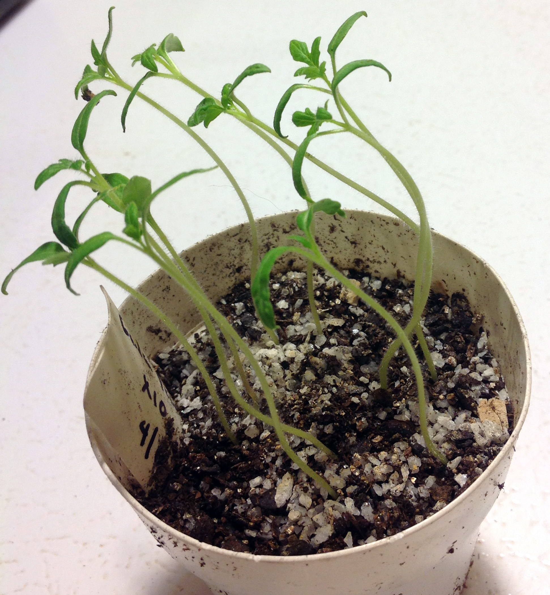
Etiolation of tomato seedlings
Emerging seedling require bright light as they emerge from the soil. Low light conditions will result in etiolation, or stretching of the seedling toward the light. This rapid, light green and weak growth will produce transplants that will be prone to breakage and may have problems adjusting to outdoor conditions. Place seedling trays where they will get bright sunlight but be out of direct sunlight to avoid overheating. If growing under lights, the seedlings should be about 4” − 6” from the lights. Light may also affect germination. Some seeds require light to germinate and will be planted at or near the soil surface. Others are inhibited by light and are planted deeper in the soil.
- A higher color temperature, such as 6500K, is best for starting seeds. (https://blog.planter.garden/posts/grow-lights/)
- PPFD - Photosynthetic Photon Flux Density (PPFD) is a crucial measurement for your plants. Unlike lumens, which only measure the brightness of a light source, PPFD measures how much of the necessary light within the photosynthetic spectrum (400-700 nm) is reaching your plant. (https://blog.planter.garden/posts/grow-lights/)
Similarly, plants like petunia and snapdragon require short days of 10 − 12 hours to develop. Most other plants grow well with 16 − 18 hours of light.
|
|
Moisture
Germinating seedlings die quickly if allowed to dry out. Seed should be sown onto damp soil. After sowing, water thoroughly and allow the container to drain. Cover the tray to retain heat and humidity. Plastic containers, plastic wrap, glass, or even bubble wrap can be used as a cover. Check moisture levels daily, especially if using bottom heat. If additional water is needed, apply as a spay or fine stream to avoid disturbing the seed. Keeping the soil too wet, however, will limit oxygen available to the seed. As soon as seedlings have emerged, remove the cover. If seedlings are left in a high humidity environment for a long period of time, they will need to be hardened off by partially removing the cover until the seedlings adjust to lower humidity levels over a period of days.
|
|
Heat
Not all seed requires warm conditions to germinate, but most of the common flower and vegetable seeds will benefit greatly from bottom heat. Seeds do not respond to air temperature as much as they do soil temperature. Therefore bottom heat provides the best means of speeding up germination of seeds. Place seedling trays where the soil will be warmed; 75 F − 80 F is generally a good target temperature. Heat mats specifically for growing seedlings are an affordable, convenient and safe means of providing bottom heat. Most of them have an internal thermostat and are low wattage. They can be found at some local garden centers or through online stores. To save money and space, keep seedling trays on the heat mat until the seedlings emerge then move them off the heat mat. This way, one heat mat can be rotated for many trays of seedlings.
Soil Temperature Conditions for Vegetable Seed Germination
| Crops | Minimum (ºF) | Optimum range (ºF) | Maximum (ºF) |
| Asparagus | 50 | 75-85 | 95 |
| Beans, Lima | 60 | 75-85 | 85 |
| Beans, Snap | 60 | 75-85 | 95 |
| Beets | 40 | 65-85 | 95 |
| Broccoli | 40 | 60-85 | 95 |
| Cabbage | 40 | 60-85 | 95 |
| Carrots | 40 | 65-85 | 95 |
| Cauliflower | 40 | 65-85 | 95 |
| Celery | 40 | * | * |
| Chard, Swiss | 40 | 65-85 | 95 |
| Corn | 50 | 65-95 | 105 |
| Cucumbers | 60 | 65-95 | 105 |
| Eggplant | 60 | 75-85 | 95 |
| Garlic | 32 | 65-85 | 95 |
| Leeks | 32 | 65-85 | 95 |
| Lettuce | 32 | 60-75 | 85 |
| Cantaloupe | 60 | 75-85 | 105 |
| Okra | 60 | 85-95 | 105 |
| Onions | 32 | 65-85 | 95 |
| Parsley | 40 | 65-85 | 95 |
| Parsnips | 32 | 65-75 | 85 |
| Peas | 40 | 65-75 | 85 |
| Peppers | 60 | 65-75 | 95 |
| Pumpkins | 60 | 85-95 | 105 |
| Radishes | 40 | 65-85 | 95 |
| Spinach | 32 | 65-75 | 75 |
| Squash | 60 | 85-95 | 105 |
| Tomatoes | 50 | 65-85 | 95 |
| Turnips | 40 | 60-95 | 105 |
| Watermelons | 60 | 75-95 | 105 |
Source: California Master Gardener Handbook, 2nd edition, Regents of the University of California, Division of Agriculture and Natural Resources, Publication 3382 (Table 5.2, page 114).
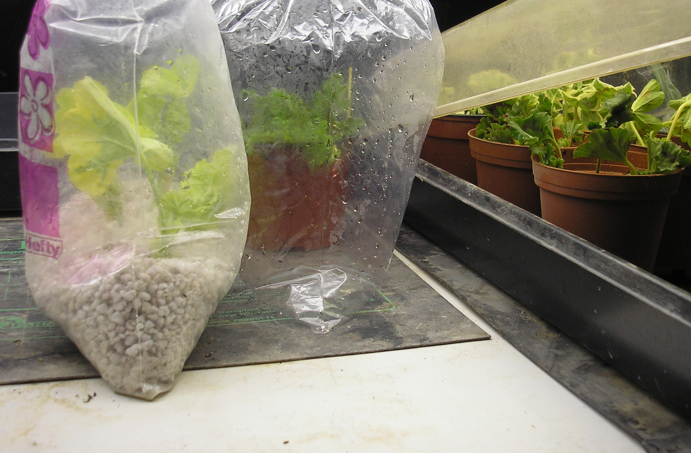
Propagating containers on heat mats
You may have noticed the missing temperatures for celery. Celery requires diffused, non-direct light and a cooler night temperature than the day temperature for good germination. Its optimal conditions are 85°F during the day and 70°F at night.
|
|
Ventilation
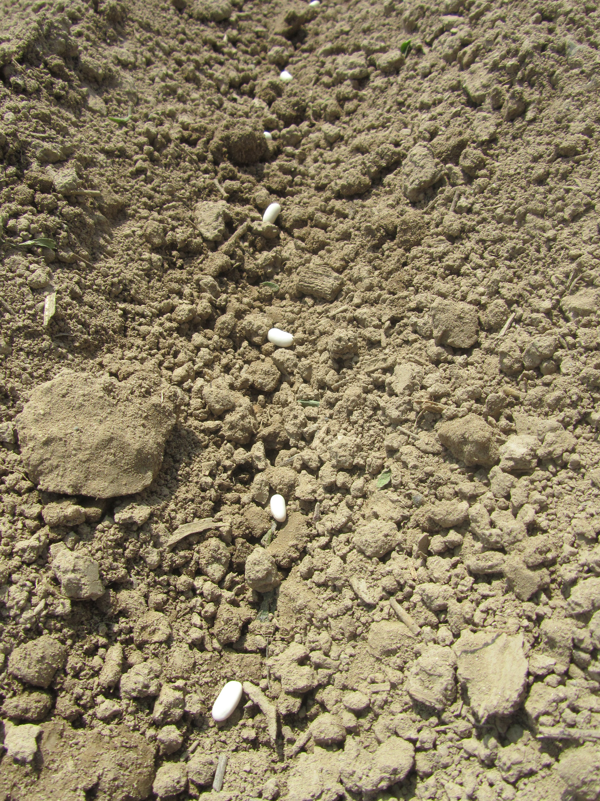
Bean seeds sown in garden furrow
Movement of air around and between plants helps prevent disease problems in seedling flats. Thick stands of seedlings are more prone to disease. Seed should be sown so that there is space between each seedling in the tray. A fan can enhance air movement in enclosed rooms as well as in greenhouses. Do not position the air flow directly at the plants.
Sowing Seeds
Sowing Schedule
Schedule seed sowing for the proper outdoor planting time. Transplants started too early indoors will become overgrown and leggy. They will be difficult to harden off and transplant into the garden. For example, tomato should be sown indoors only six to eight weeks before they are expected to be planted in the garden. Pepper and eggplants require a 10 week head start indoors. Marigold can be planted as quickly as four weeks before the outdoor planting time while petunia will need a 10 − 12 week time period. Most seed packages will list suggested indoor sowing times.
|
|
Sowing Seed
Propagation from seed begins with choosing varieties, purchasing viable seed, and scheduling. One packet of seed can produce a great deal of transplants. Perennials, annuals, vegetables and even trees and shrubs can be grown from seed. There are a wide variety of seeds available so choose carefully, paying attention to color, harvest dates and resistance to disease. Seed suppliers test seed for germination and list a year on the package. This indicates that the seed passed germination tests for that current year. Check dates on seed packets to make sure the seed is fresh. Some vegetable and flower seed may be treated with pesticides to inhibit fungal and insect attack when planted. Treated seed is normally brightly colored (the color is an indicator dye and not the pesticide itself) and the packet will be marked as containing treated seed.
|
|
Planting the Seed
Sow seed thinly in rows, leaving ample space between each seed. This space will allow for air circulation between plants and make transplanting easier. Cover seed according to package directions—lacking a recommendation, do not cover any deeper than twice the thickness of the seed. A top dressing of fine sphagnum peat moss or grit will help prevent development of damping off, a fungal disease that can quickly destroy trays of seedlings. The moss or grit creates a surface layer that inhibits the growth of the fungus.
- Small seeds. Combine small seeds with fine sand or vermiculite before sowing. This diluting technique helps improve spacing.
- Covering. Cover seeds with an appropriate amount of soil. While packets typically indicate proper depth, general guidelines are 1/8" - 1/4" for small seeds and 1" - 2" for larger ones. Another rule is to plant the seed to a depth of twice its diameter.
- Top dressing. A top dressing of fine sphagnum peat moss or grit will help prevent fungal disease (see "damping off" in the plant pathology module).
- Direct sow. Faster growing plants with larger seeds can be planted directly in the soil in the garden. Many vegetable crops-beans, peas, sweet corn-as well as some perennial and biennials do well as a direct sown crop. See the vegetables chapter for guidelines. Annuals with longer growing seasons such as petunias and amaranth are best started indoors.
More information:
- How to plant seeds in your garden - https://youtu.be/C1xW0bAjht4
- Also, https://u.osu.edu/ohiovictorygardens/
Seedlings
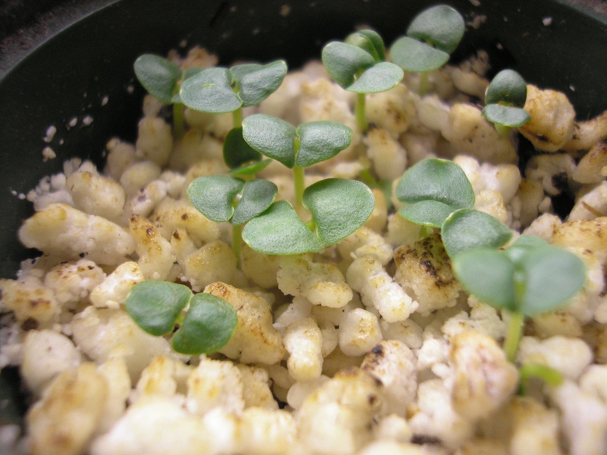
Basil cotyledons and layer of perlite
After germination, the seedlings will emerge with a pair of cotyledons (seed leaves). Within a few days, true leaves will be seen developing at the growing tip of the plant. The cotyledons may remain attached for a few days but will eventually wither and die as the true leaves continue to develop.
Transplanting
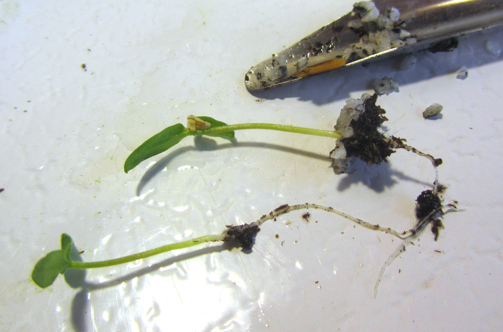
Young tomato seedling transplants
Transplant the seedlings as soon as they can be safely handled. This is generally when they grow their first set of true leaves. However, they can be transplanted earlier providing care is taken not to damage the fragile stem or growing tip. Waiting too long will result in masses of intertwined roots which will be torn during transplanting.
Use a pencil or other thin tool to carefully lift and separate the seedlings. Handle the seedlings by the leaves (which can be replaced) rather than the fragile stem. Transplant them into their own small container or multi-cell pack. Water well and provide a cover to increase humidity for a day or two until the roots recover.
Seeds can also be direct sown into individual containers, especially for rapidly growing larger plants such as marigolds and beans. Do not overpot, since planting seedlings in too large a container can lead to excess soil moisture and root disease. Small, slow growing plants such as begonias or impatiens will not develop well with this method.
Give seedlings plenty of light to encourage strong stocky growth. Monitor watering as they will dry out rapidly as the roots fill the small containers.
More Information:
- Transplanting seedlings - https://youtu.be/e43x-u46fPk?si=PkEoO4czTariMtd3
Fertilizing
The seed carries stored nutrients for the developing seedling in the cotyledons so the seedling does not have an immediate need for nutrients. However, after a few days of vigorous growth, the seedling will begin to show nutrient deficiency symptoms; this will show up as a general yellowing of the plant and/or a purple coloration to the stem and leaves.
Typically once seedlings develop their second set of true leaves, it is time to start feeding them. Young seedlings are very tender and can't tolerate a full dose of fertilizer. Fertilize them them with a water-soluble one at 1/4 to 1/2 strength. Apply on a weekly basis, and increase the frequency or strength as needed. Generally a fertilizer with a ratio of 1 :2:1 is recommended, but a 1 :1 :1 ratio will also work. Since seedlings are grown in a sterile, soilless medium, fertilizing is important.
Pinching
Pinching or trimming will encourage fuller growth for some types of transplants. If given the ideal growing conditions, pinching is not always necessary. If, however, the seedlings become too tall or leggy, they can be trimmed. This is especially true for plants, like tomatoes and basil. Plants must have more than one pair of true leaves, and the pinch must be made above a pair of true leaves for axillary buds to develop. Cabbage and its relatives cannot be trimmed, because their growing point is held down in the crown of the seedling. Onions can be given a "hair cut" to keep them under control.
Disease Control
Common problems that occur when raising seedlings usually involve the conditions under which the seeds are grown. With insufficient light, seedlings show etiolation, or abnormal fast, weak growth. As seedlings grow toward the light, they appear to stretch resulting in bent and easily broken seedlings. The solution is to provide more light or move the seedlings closer to the light source.
Damping off is a fungal disease that can destroy a tray of seedlings seemingly overnight. This fungus feeds at or near the soil surface and prefers a wet, highly organic media with little air circulation. Seedlings affected by damping off will appear to have fallen over as if they were cut at the ground. Close inspection will reveal brown stem tissue at the point of collapse. Fungicides can be used as a curative measure, but prevention is better.
- Top the seedling tray with a thin layer of finely milled sphagnum moss or grit to make the environment unsuitable for the development of damping off.
- Increase air circulation.
- Sow seed thinly.
- Sterilize containers.
Nutrient deficiencies can be a problem if seedlings are grown in a mix without fertilizer. General symptoms include yellow leaves, small leaves, purple coloration to stems and leaves. Provide an weak fertilizer solution on a regular basis to prevent nutrient deficiencies from occurring.
Hardening Off
As the transplants grow, they will need to be acclimated to the harsher outdoor environment before being planted in the garden. To harden off seedlings, move them to a sheltered and shady area about two weeks before outdoor planting. After one week, move them to a more exposed location (more wind and sun) for another week. After this hardening off period, they can be moved to a more exposed area to await planting.
More Information:
- How to care for mail order perennials when they first arrive and what to do with them before the soil has warmed sufficiently to plant them - https://youtu.be/rexFOJK1uLo?si=NkNRFcRUhoh0sqvA
Planting in the Garden
After hardening off, transplants can be placed in the garden according to the needs of the particular plant. If seedlings are early, they may need to be held in a protected area before moving them into the garden. Woody seedlings or cuttings are usually lined out-planted close together in rows with the intent of moving them further apart the following season. This saves space and allows for expected loss of some transplants during the first year.
- More information: Hardening Off and Transplanting (https://blog.planter.garden/posts/hardening-off-and-transplanting/)
- With transplant dates in mind for each of your plants, aim to start the hardening off process about two weeks prior. To start the process, find a partially shady location in your garden, or start the process over a stretch of a few cloudy days. Be sure the selected location is somewhat sheltered from wind. Gather your seedlings together in trays or shallow containers - this will make carrying them outside and inside easier.
- On the first day of hardening off, take your seedlings outside to the chosen location, leave them out for a few hours, then bring them back in. Each day, gradually increase the number of hours that the seedlings spend outside and the amount of sunlight they receive.
- If the forecast calls for extreme weather (cold, heat, wind, storms), keep the seedlings inside. Continue the hardening off process once the risk of extreme weather has passed. Once the seedlings are spending most of the day outdoors you can start leaving them outside overnight, but watch the forecast to ensure it won’t get too cold for your plants. After a week or two of this process, your seedlings are ready for transplanting!
Asexual Propagation
While sexual propagation (seed production) takes advantage of the random recombination of genes from the parents, asexual propagation is the preferred propagation method for producing exact copies or clones of the parents. Methods include cuttings, layering, division, grafting and more.
|
|
Conditions for Asexual Propagation
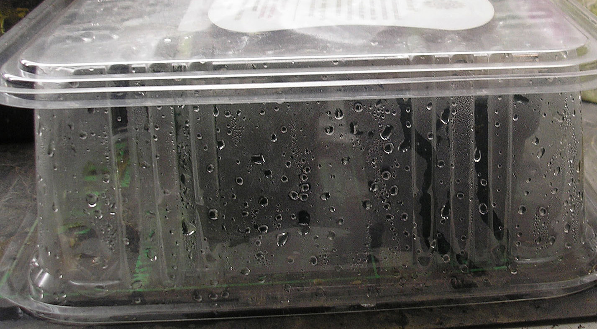
There should always be condensation on the sides of the container
but no standing water in the bottom
The environment needed for successful root cuttings is very similar to that for seed starting. The better the conditions for the cutting, the more rapidly it will replace the missing roots, shoots and leaves needed for its survival.
As with seeds, success with cuttings will greatly increase with bottom heat. Humidity levels are more important for asexual propagation. Without roots, the propagule (or cutting) will rapidly lose water. Keeping the humidity high reduces water loss from the plant. Another technique to reduce water loss from large-leaved plants is to remove a portion of the leaf. The high humidity will need to be maintained for a long period of time. Any structure, bag, or cover that will hold in moisture can work as a propagation structure for cuttings.
Adjust humidity levels by opening the structure or adding more water as needed. There should never be any standing water, and there should always be moisture on the inner sides or top. The high humidity will also encourage disease, so ventilation, or space between plants, is important.
Stock Plants
Stock plants for cutting material should be free of diseases, pests and nutritional disorders. Such problems weaken the plant making it more difficult for the cuttings to develop roots or buds. Since cuttings are perishable, make sure the stock plants are well watered to ensure the new cuttings will be full of water. Stock plants should also be properly identified to avoid passing on an improperly labeled plant to another gardener.
Plants that are protected by patents should not be propagated for distribution.
Cuttings
|
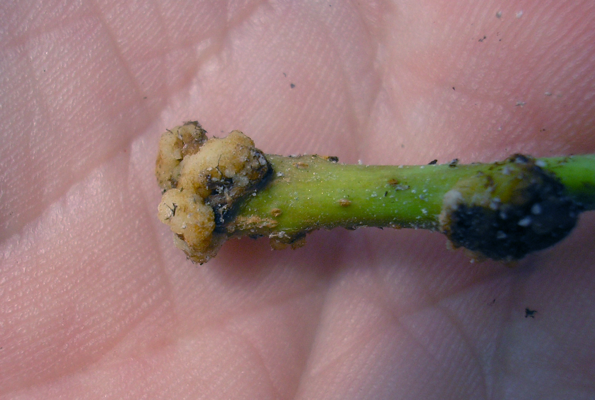 Callus formation at the base of a stem cutting |
|
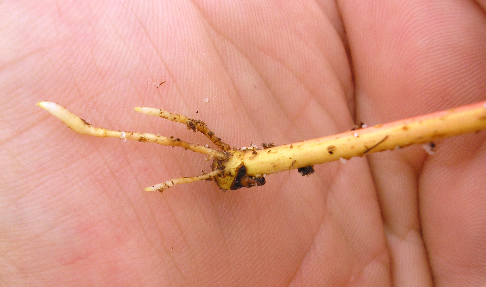 New roots emerging at base of stem cutting |
Many plants can be propagated from portions of leaves, stems, roots, and tissue. Most shrubs and trees and many perennials can be propagated by cuttings. As with seed sowing, research the plant being propagated to determine the best method. Resources are available at the end of the module to indicate the preferred cutting types and rooting hormone requirements.
Plants react to propagation by going through a series of developmental steps to replace missing roots and buds. Initially the cutting will produce a callus, an unorganized growth of cells that form on the cut surface. Some plants produce a great deal of callus while others produce so little it is difficult to see. After callus production, root tips will emerge from within the stem and callus. Buds may form as well depending on the type of cutting.
Hormones produced by the plant induce the growth of buds and roots. Propagators use rooting hormones to enhance and speed up the plants production of these organs. The more rapid the cutting roots, the higher the rate of success of the propagule. Rooting hormones (e.g., Rootone, Clonex) come in both powdered and gel forms. Some include a fungicide to protect the cutting from rot. Hormones are active in very small quantities, so heavy applications to the cutting are not needed. In fact, too much hormone can damage the cutting. Dip the cut end in the hormone and shake off any excess before sticking it in the media. Stronger rooting hormones (e.g., Hormodin) are available for working with more difficult to root materials or woody cuttings.
Do not confuse rooting hormones with root promoters or root enhancers. They are packaged and marketed like hormones but will not have the same effect.
|
|
Stem Cuttings
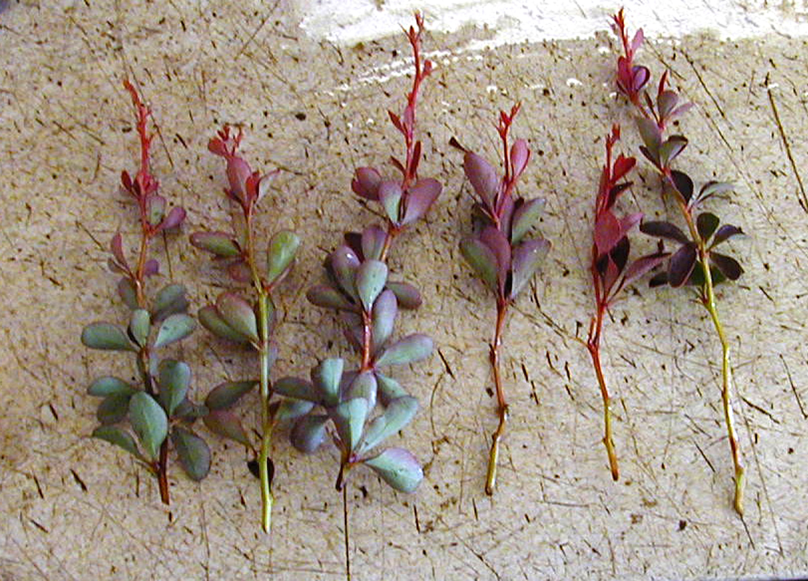
Remove bottom leaves and grade cuttings
by size and vigor
Sections of stems are used to propagate many types of perennials, woody plants and houseplants. For herbaceous plants, take cutting 3” - 4” long. Take the cutting 1/4” below a node and include several leaves and remove any flower buds. Remove the lowest leaves as the cutting will be inserted into the soil up to half the length of the cutting. It is also beneficial to grade cuttings so they are of similar size and vigor. Apply rooting hormone if needed. Dibble a hole in the rooting media and insert the cutting.
In the case of stem cuttings, the plant needs to form a new root system to support the buds that are already on the cutting. Leaves on stem cuttings may die and should be removed to prevent disease. The existing buds are the important part of the cutting.
Stem cuttings of some species root rapidly, while others may take several weeks. After about a week, do a “tug test” by pulling gently on the cutting. If it resists being pulled then roots are forming. When the cutting has a small ball of roots it can be transplanted to a larger container and hardened off.
|
|
Softwood and Hardwood Cuttings
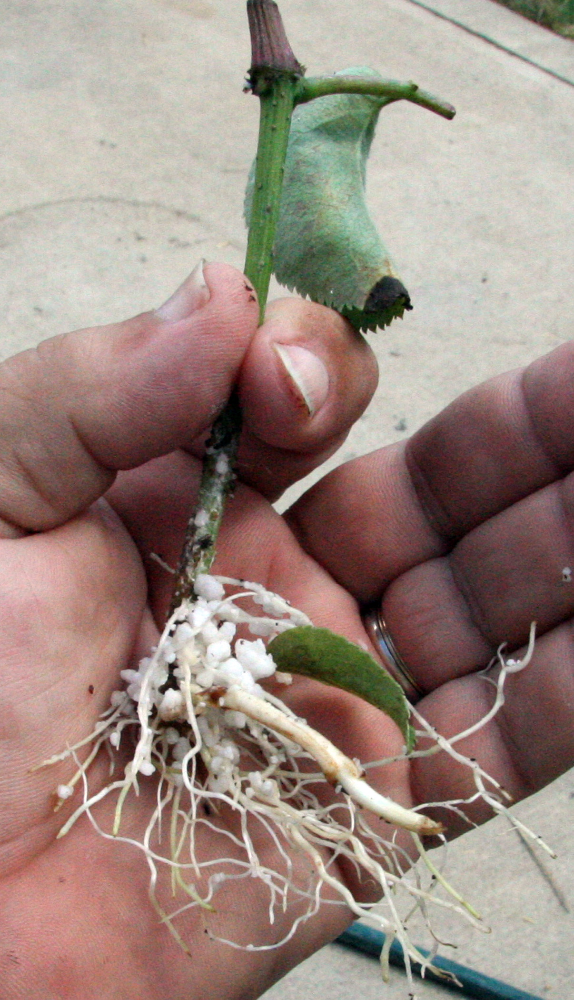
A rooted cutting will resist being pulled out of the media
Cuttings of woody plants are classified by their degree of development. Softwood cuttings are taken from the flush of new growth that occurs in spring through early summer. These cuttings are soft and perishable and are handled like most other cuttings.
Hardwood cuttings are taken in the fall or late winter from the prior year’s growth. A good hardwood cutting is the thickness of a pencil and 8" - 10" long. Hardwood cuttings can be made from prunings — blueberry, grape, and forsythia are a few plants where the gardener can take hardwood cuttings from branches removed during regular pruning.
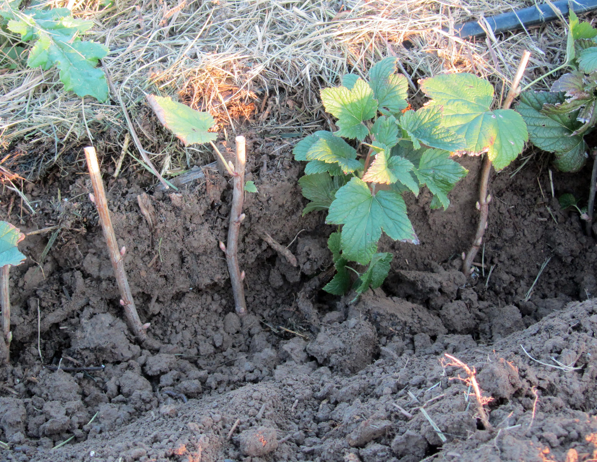
Pencil thick hardwood cutting are planted
in a deep furrow in the field
Hardwood cuttings are not as perishable as softwood cuttings. They do require a stronger rooting hormone for increased success. Cuttings are taken, cleaned and graded. They are dipped in rooting hormone then planted deeply—they can be planted outside in beds, in a cold frames or even left to callus in sand beds.
|
|
Leaf Cuttings
Leaf blades of some species (e.g., begonia, African violet and jade plant) are capable of producing new plants. In this case, the cutting must form entire plants, not just roots. Leaf cuttings of begonia can be taken with our without a petiole. African violet leaf cuttings should be taken with a piece of petiole attached. Typically, a callus will form at the cut surface, then roots and buds will form at the callus. After the buds expand into plantlets, they can be removed and transplanted into another container. Some plantlets may not have a root system and should be treated like cuttings. Since this method produces very small plants, it will take some time to grow a mature plant.
|
|
Root Cuttings
Some woody and perennial plants (e.g., cotoneaster, horseradish and poppy) propagate well from root cuttings. Sections of root 6” − 8” in length are cut from the parent and planted horizontally or vertically either in the field or containers. Take cuttings during the dormant season as the roots will be filled with stored carbohydrate.
Do not propagate grafted plants from root cuttings. The root stock on a grafted plant is not the same plant as the above ground portion so the resulting plant will be just a rootstock and not the desired cultivar.
Layering
|
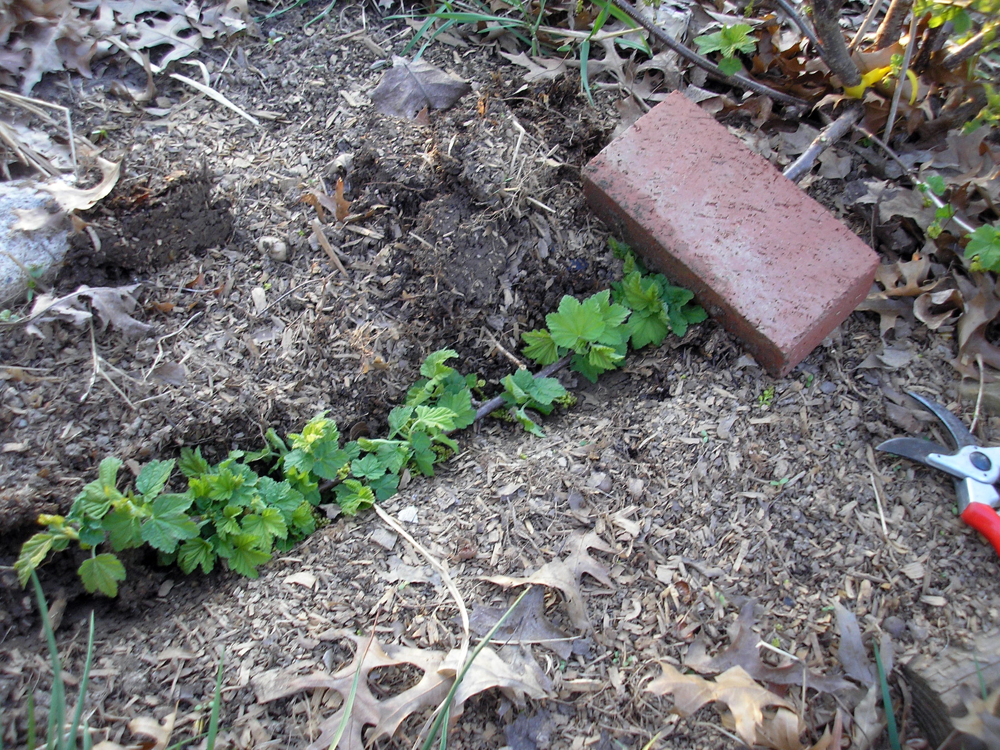 Each bud in this trench layer will grow into a plant |
|
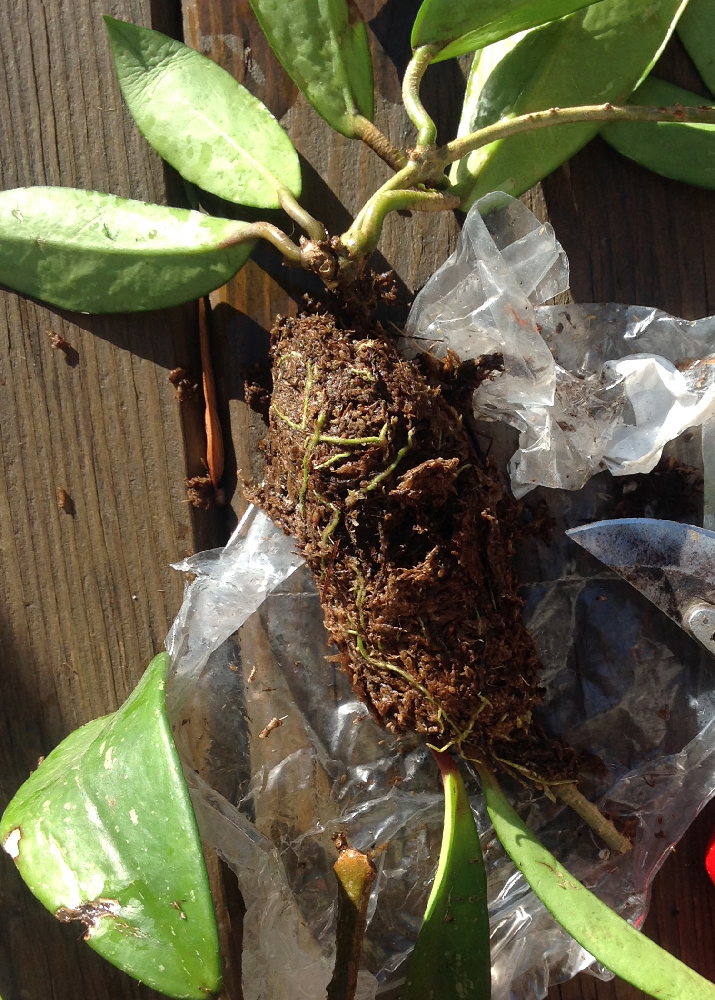 The air layer on this Hoya has been cut free and will be potted up; the roots can be seen growing in the moss |
This method of propagation leaves the propagule attached to the parent plant until it is has its own root system. Sometimes the stem is wounded where it will be in contact with soil so the plant will form callus. Rooting hormones can be applied to the wounded stem. Strawberries self-propagate via layering as the runners touch the ground to form a new plant with its own root system.
Many layering techniques require a full season until the plant has formed roots. At that point the stem of the parent plant is cut, and the young plant is removed to a new location.
Simple Layering. This layering technique is done by taking the branch (still attached to the parent) and bends it to the ground where it can be buried or held on the surface with a rock or wire pins.
Trench or Compound Layering. This layering method produces several plants from one branch. A shallow trench, 1” - 2” deep, is dug next to the parent plant. The parent branch is bent to the ground and buried in the trench — it may need to be held down with wire pins or a rock. Each bud on the buried branch will grow upward from the trench and roots will form at the base. Wounding and hormones may help the rooting process. Next season the branch can be cut into sections containing the newly rooted plants.
Mound Layering. This is similar to the trench layer, but the base of the entire plant is buried instead of just one branch. Again, wounding and hormones will help with the rooting process. Mound layering may also take more than one season for the individual branches to form a good root system.
Air Layering. This technique offers an ideal solution for a houseplant has gotten too tall for its location. Make a slit in the stem, 10” - 12” below the growing point. Wrap damp fibrous sphagnum moss around the wound and hold it in place with a layer of plastic wrap that is tied to the stem above and below the wound. Cover the entire layer with foil to inhibit the growth of algae.
Easy-to-root species like Dracaena or fig will root within a year. The layer can then be removed from the parent plant and the original plant discarded or grown on.
Division
|
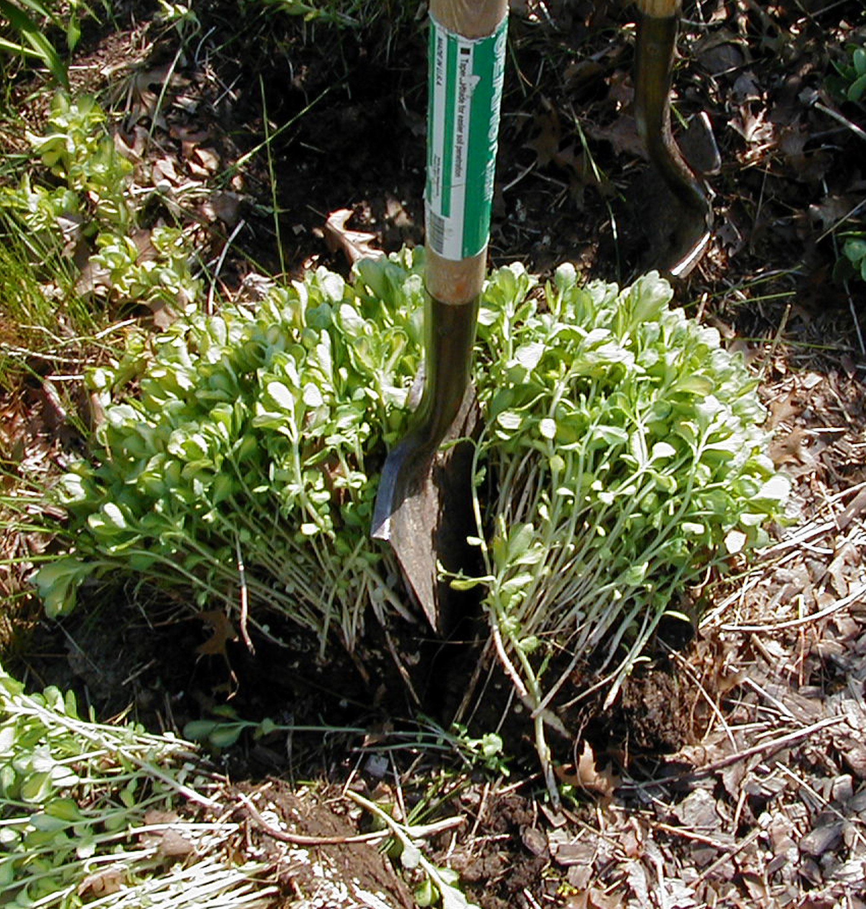 Clumps of sedum are easily split into several sections with a spade |
|
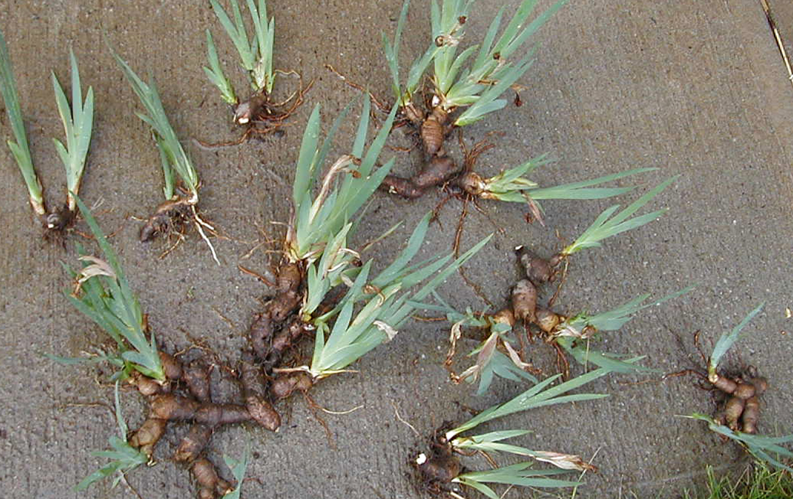 Iris are lifted with a spading fork then the rhizomes are divided into individual sections |
Division is one of the easiest methods of propagation. Many mature plants naturally form clumps by producing new plants from buds near the base; other plants form clumps via rhizomes or stolons. Division is simply digging up the parent plant and separating it into smaller sections, each with its own crown and root system. The original plant can even be divided down to individual plantlets but each one must have at least one growing point and several roots. Iris, daylilies, lilies, sedum and hosta are all good candidates for division.
A sharp spade is a good tool for dividing thick clumps of plant material. Spading forks work well for lifting and separating clusters of iris, mint or other spreading plant. The spading fork does not cut into the plant as the spade does.
Set the division in its new location at the same depth as the original plant. Division is best done to best meet the needs of the plant. As a general guideline,
- Spring and summer blooming perennials should be divided in fall.
- Fall bloomers should be divided in early spring.
|
|
Bulbs
|
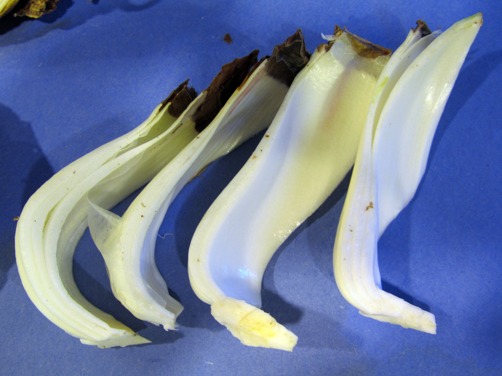 Each group of bulb scales has a portion of basal plate attached |
|
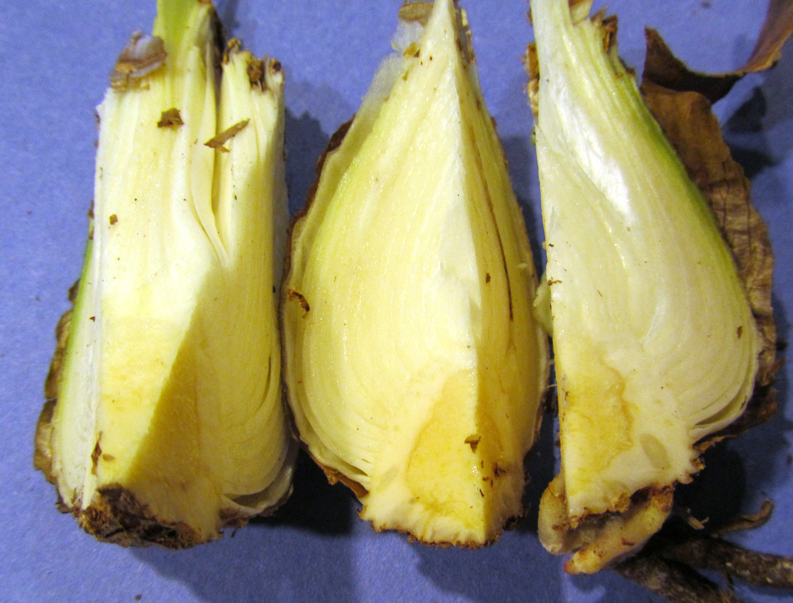 The section of basal plate at the bottom of each section will form bulbils |
|
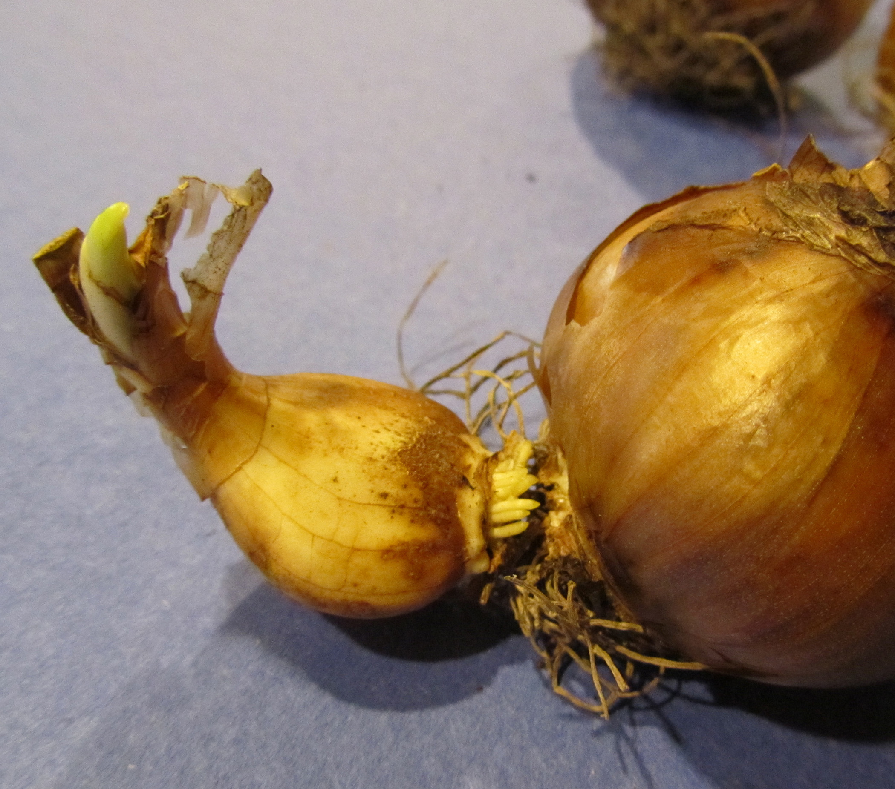 This bulb offset has its own basal plate and root system |
|
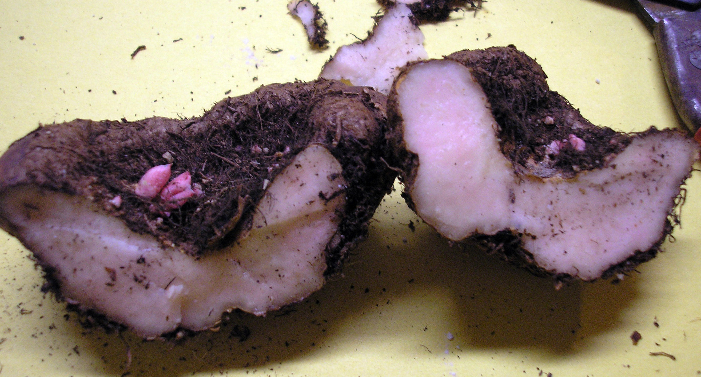 This begonia tuber has been cut so each section contains viable buds |
The bulk of a bulb is unexpanded leaves. The growing point is actually the basal plate located at the bottom of the bulb. When handled properly, this basal plate is capable of producing callus, roots and bulbils (tiny bulbs).
One method is to damage the basal plate by cutting through it several times with a knife in a process known as scoring. The bulb is then planted but instead of normal growth, the damaged basal plate will produce callus and bulbils. The original bulb will be destroyed but several smaller bulbs will take its place.
A second method is scaling. Cutting the bulb vertically into four quarters will yield four cuttings, each with a piece of basal plate. As with scoring, the cuttings are planted and each one will form a small number of bulbils. The propagator can carry this further by peeling off groups of three or four scales (unexpanded leaflets) along with a piece of basal plate. Each bulb will then produce more cuttings, and each one will produce a small number of bulbils. These smaller cuttings have a lower success rate than either scoring or using larger cuttings. Lilies can be scaled without cutting. Simply pull individual scales from the other layers of a mature bulb. The individual scales are pulled from the the bulb — there will be no basal plate. They can be planted upright with their tips sticking above the media.
Corms have a basal plate but no scales. In this case, scoring or even scooping out part of the basal plate will result in callus production and the formation of cormels.
Simple propagation of bulbs and cormels takes advantage of offsets the bulbs normally produce. Bulbs will produce offsets that can be pulled from the parent bulbs or corms when they are dormant. Make sure each tiny bulb has formed its own basal plate prior to removing it from the parent bulb. Similarly, tiny cormels will be produced around the base of the parent corm. They can be removed and planted individually in rows.
Tubers and Tuberous Roots. Tubers are actually stems and can be dug up and separated.
- Potatoes: Cut into individual sections with one good eye or bud for each segment.
- Begonia and gloxinia: Look for the eyes arranged on top of the tubers and cut into sections with several viable buds on each segment.
- Tuberous rooted plants: Since tuberous roots like those of dahlias don't have eyes, cut the plant apart at the crown and make sure each tuberous root has a viable bud. It's best to wait until buds begin to develop before making these cuttings.
Grafting
Grafting is widely used in industry to produce many of the ornamental landscape plants on the market. It involves taking parts of two different plants of the same species and physically uniting them. The understock or rootstock provides the roots for the grafted plant. It is often selected for specific traits like viability, resistance to disease, size control, or strong support. The scion, or upper portion, is usually the desired cultivar of plant. A good example is grafting of apples, where the rootstock may provide resistance to disease and limit the size of the entire tree. The scion would be the variety of apple the grower wants to produce.
Success with grafting depends on timing and the physical placement of the graft. In order for the graft to work, the vascular tissues of the plant must be rapidly developing - this occurs in spring. The vascular tissues of both scion and rootstock must be placed next to each other and held in place until the developing vascular tissues merge to complete the graft. Grafted tissues are usually sealed with some type of wax or plastic and can be held in place with rubber ties.
The rubber ties and wax have fallen away from this established graft; the under-stock was pruned down to the level of the graft.
Bud grafting is another technique that involves using only buds of the desired plant. Latent buds are removed from the parent plant in summer with a piece of of cambium attached. A T-shaped incision is made into the understock, and the bud is inserted. The bud graft is wrapped and sealed to the tree.
This bud will be wrapped with grafting tape to secure it to the trunk until the graft takes.
There are many advantages to grafting:
- Rapid production of desired plants. One parent plant can contribute enough scion wood for many trees.
- Multiple varieties can be grafted onto one base tree (as long as they are of the same species).
- Disease and pest resistance.
- Size and shape control.
Grafts do fail. Graft incompatibility shows up as overly swollen trunks above or below the graft union. Generally, the more closely related the trees, the more compatible the graft. Some plants don't fit the typical model for propagation. Mosses and ferns are two interesting examples. Most growers do not actively propagate these plants, but they do provide an interesting challenge to the more advanced plant propagator.
More information:
- Side Veneer Graft
- How to Splice Graft Cucumbers - Splice grafting is used to improve low temperature tolerance of cucumber plants. Learn more about the process with this free publication: https://www.extension.purdue.edu/extmedia/HO/HO-328-W.PDF Links to an external site. (From Purdue Extension)
- Tomato Grafting
Specialty Propagation
|
|
Moss
Asexual Propagation of Moss. Mosses are very simple plants lacking both roots and vascular tissue. They can be used as an ornamental addition in the garden, planter or terrarium. For some shady properties, mosses are grown as a lawn alternative. Moss is easily propagated asexually by clipping portions of moss plants (fresh or dry) and spreading them onto a moist peat medium. The clippings will continue to grow into individual moss plants.
More Information:
- Moss Garden Development and Maintenance
- One gardener describes his experience with a moss lawn - https://youtu.be/dGarHtc75Ck?si=eDVzyft-v6Sq5rad
|
|
Ferns
Sexual Propagation of Ferns. Ferns present a challenge for sexual propagation. They reproduce sexually by means of spores, which are produced on the underside of the fronds in a structure called a sorus (plural sori). Spores can be collected by placing fronds with sori on paper or in a bag. The spores are released as the fronds dry. Spores can be dusted onto a peat media which is kept moist in a humid, warm environment. Spores will germinate and grow into a prothallus, a small heart-shaped green pad. The prothallus, in turn, will produce egg and sperm-producing tissue. When misted with water, the sperm will swim to the egg; the fertilized egg will grow into a mature fern plant which can be hardened off and transplanted.
Tissue Culture
Tissue culture is a method that potentially produces thousands of plants from a small amount of original tissue. By altering plant growth hormones in a sterile artificial media, the tissue will be induced to divide and form plantlets. Individual micro-transplants or micro-cuttings can be taken from the tissue cultures. Transplants are grown out like any other asexually propagated plant. Successful tissue culture propagation requires a significant investment in equipment and supplies and is beyond the scope of most hobbyists.
Additional Resources
Plant Propagation Laws & Ethics. Be aware many plants are patented by hybridizers. These patents are designed to give the patent holders exclusive rights to sell the plants thus incenting them to invest in further plant research. Know it is illegal for others to propagate these plants to sell. Additionally, some cultivars have names that are trademarked. While these cultivars can be sold, they cannot be marketed using the trademark name. Instead, the common or botanical name must be used. Beyond patents and trademarks, remember to always ask before taking cuttings or seeds from private property, public gardens, parks or preserves.
More Information
Books and Papers
- Ball Redbook: Crop Production, by Allison Westbrook (Author), Jim Nau (Editor), & Bill Calkins (Editor)
- Creative Propagation, by Peter Thompson
- Manual of Woody Landscape Plants, by M. Dirr
- Plant Propagation: Principles & Practice., by Hudson, et. al.